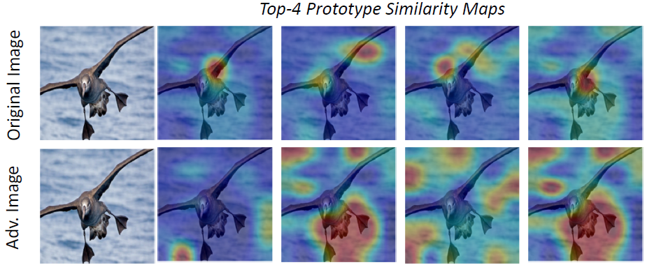

|
I finished my Master’s in Computer Science in September 2024 through the Swiss Joint Master of Science in Computer Science program (University of Bern, University of Neuchatel, University of Fribourg) with a grade of 5/6 and a specialization in Data Science. My thesis focused on Contrastive Learning for Character Detection in Ancient Greek Papyri images, under the supervision of Prof. Andreas Fischer, Prof. Rolf Ingold, and Lars Vogtlin. Prior to this, I earned my Bachelor’s degree in Electronic Communication Engineering from B.V. Raju Institute of Technology with 73% marks in 2016. I then spent three years at Cyient in Hyderabad, working on ServiceNow technology, gaining experience in administration, development, and IoT, including modules like client scripts, server-side scripts, workflows, and ITSM processes such as incident, problem, and change management. Currently, I am seeking roles in Machine Learning, AI, and LLMs. I have completed various projects in Computer Vision and Machine Learning during my master's. Email / CV / GitHub / LinkedIn / Thesis Report / Thesis Slides |

|
ProjectsDuring my master’s, my main focus was on data science-related courses and projects. I gained a strong understanding of core Machine Learning concepts and algorithms, particularly through the Pattern Recognition course, where I learned about KNN, Clustering, Bayesian classification, Support Vector Machines, and Artificial Neural Networks. To deepen my knowledge, I also took courses such as Machine Learning, Digital Humanities, and Statistical Learning, where we explored ML topics in detail. Additionally, I read papers on machine learning during seminars and wrote scientific articles. One of the papers I co-authored in the Seminar Public Services course was published in the Informatik Spektrum Journal. In the Fuzzy System course, I completed a project that utilized fuzzy logic technology to recommend personalized travel destinations by analyzing user responses. I also studied Recommendation Systems, which helped me understand how recommendation engines on websites and social media platforms function. |

|
University of Fribourg, Feb 2024 - Sep 2024 Thesis Report and Code This project evaluates SimCLR, a contrastive learning technique, in recognizing Greek letters and compares its performance with traditional supervised models. By pretraining SimCLR on a large dataset and fine-tuning it on a smaller one, I assessed the impact of different data augmentation strategies. I also explored why supervised learning models outperformed SimCLR in this specific task. |
|  |
University of Fribourg, Feb 2021 - Jun 2021 In this seminar project, we explore the vulnerabilities of Convolutional Neural Networks (CNNs) to adversarial attacks, which introduce subtle noise to input images. By examining interpretable CNNs, we analyze how these attacks succeed and visualize the resulting changes in discriminative regions. Utilizing networks like VGG16, Attention Pooling, and Prototypical Networks, we leverage techniques such as Class Activation Mapping (CAM) to interpret CNN decisions on the CUB dataset under various gradient-based adversarial attacks. |
PublicationsGeorgiana Bigea, Maria Mumtaz, Prof. Edy Portmann, Jennifer Swaminathan, Vedasri Nakka Informatik Spektrum, Accepted: 2 May 2024 This paper discusses the intersection of life engineering, algorithms, AI, social media, and their impact on human life. We reviewed three influential books: Cathy O'Neil's "Weapons of Math Destruction", Kate Crawford's "Atlas of AI", and Shoshana Zuboff's "The Age of Surveillance Capitalism". Our analysis highlights the need for ethical technology that balances innovation with societal well-being. Read more in the paper. |
Work ExperienceI have three years of experience as a ServiceNow Developer at Cyient.
|
|
Credits: Webpage template from Jon Barron. |